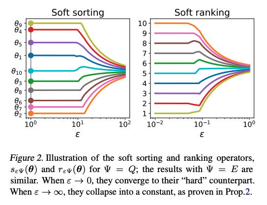

https://arxiv.org/abs/2002.08871
著者
Mathieu Blondel (Google Research, Brain team)
Olivier Teboul (Google Research, Brain team)
Quentin Berthet (Google Research, Brain team)
Josip Djolonga (Google Research, Brain team)
sortやrankは線形計画問題
それに正則化項(squared normとか)を加えると、置換多面上へのprojectionになる
置換多面上へのprojectionはisotonic regressionの問題として表現でき O(n log n) で計算できて、微分もできる
sortやrankは線形計画問題として表現する
直接的に表現してみると、 \(\rho := (n, n-1, \ldots, 1), \Sigma\) を[n]のpermutationのすべてのパターンの集合 として
LPにすると
\(\mathcal{P}(w) := \text{conv}(\{ w_\sigma ~:~ \sigma \in \Sigma \})\) (つまり \(w\) を並び替えたもののと集合の凸包、 \(\mathcal{P}(\rho) = \text{conv}(\Sigma)\) となる ) として
sortとrankを一般化しておく
sortは \((z, w) = (\rho, \theta)\)
rankは \((z, w) = (-\theta, \rho)\)
正則化項 \(Q(\mu) := \frac{1}{2} {\left\lVert \mu \right\rVert}^2\) を加えると (論文中ではKL距離も紹介されているが、ここではsquared normだけ見る)
となり、 \(z\) の \(\mathcal{P}(w)\) 上へのprojectionになる。
正則化パラメータ \(\epsilon\) を調整すると (なんか論文中の \(\epsilon\) と定義が違う気がするが)
Properties
Differentiability: \(s_Q(\theta), r_Q(\theta)\) は \(\theta\) について微分可能
Order preservation: \(0 < \theta < \infty\) で \(s:=s_Q(\theta), r:=r_Q(\theta), \sigma := \sigma(\theta)\) としたとき \(s_1 \ge s_2 \ge \cdots s_n, r_{\sigma_1} \le r_{\sigma_2} \le \cdots \le r_{\sigma_n}\) となる
ここでは、単純なチェーン制約を利用できて projectionがisotonic optimizationとして表現できる。
(\(\sigma(z), \sigma^{-1}(z)\) が登場するが、sortのときは \(z = \rho\) だが、 rankのときは \(z=-\theta\) になってしまうのでまずいのでは・・・？)
\(v_Q\) は古典的に知られているように isotonoic regressionで、PAV algorithmでexactに解ける。(計算コストは \(O(n)\) )
(時間なくて導出追えていないので、よくわかりません。あとで見ておきます)
https://github.com/google-research/fast-soft-sort/
# https://github.com/google-research/fast-soft-sort/tree/master
import numpy as np
from scipy import special
from numba import njit
def njit(func):
return func
@njit
def isotonic_l2_pav(y, sol):
"""Solves an isotonic regression problem using PAV.
Formally, it solves argmin_{v_1 >= ... >= v_n} 0.5 ||v - y||^2.
Args:
y: input to isotonic regression, a 1d-array.
sol: where to write the solution, an array of the same size as y.
"""
n = y.shape[0]
target = np.arange(n)
c = np.ones(n)
sums = np.zeros(n)
# target describes a list of blocks. At any time, if [i..j] (inclusive) is
# an active block, then target[i] := j and target[j] := i.
for i in range(n):
sol[i] = y[i]
sums[i] = y[i]
i = 0
while i < n:
k = target[i] + 1
if k == n:
break
if sol[i] > sol[k]:
i = k
continue
sum_y = sums[i]
sum_c = c[i]
while True:
# We are within an increasing subsequence.
prev_y = sol[k]
sum_y += sums[k]
sum_c += c[k]
k = target[k] + 1
if k == n or prev_y > sol[k]:
# Non-singleton increasing subsequence is finished,
# update first entry.
sol[i] = sum_y / sum_c
sums[i] = sum_y
c[i] = sum_c
target[i] = k - 1
target[k - 1] = i
if i > 0:
# Backtrack if we can. This makes the algorithm
# single-pass and ensures O(n) complexity.
i = target[i - 1]
# Otherwise, restart from the same point.
break
# Reconstruct the solution.
i = 0
while i < n:
k = target[i] + 1
sol[i + 1 : k] = sol[i]
i = k
import numpy as np
from scipy import special
def isotonic_l2(input_s, input_w=None):
if input_w is None:
input_w = np.arange(len(input_s))[::-1] + 1
input_w = input_w.astype(input_s.dtype)
solution = np.zeros_like(input_s)
isotonic_l2_pav(input_s - input_w, solution)
return solution
def _partition(solution, eps=1e-9):
"""Returns partition corresponding to solution."""
# pylint: disable=g-explicit-length-test
if len(solution) == 0:
return []
sizes = [1]
for i in range(1, len(solution)):
if abs(solution[i] - solution[i - 1]) > eps:
sizes.append(0)
sizes[-1] += 1
return sizes
def _check_regularization(regularization):
if regularization not in ("l2", "kl"):
raise ValueError("'regularization' should be either 'l2' or 'kl' "
"but got %s." % str(regularization))
class _Differentiable(object):
"""Base class for differentiable operators."""
def jacobian(self):
"""Computes Jacobian."""
identity = np.eye(self.size)
return np.array([self.jvp(identity[i]) for i in range(len(identity))]).T
@property
def size(self):
raise NotImplementedError
def compute(self):
"""Computes the desired quantity."""
raise NotImplementedError
def jvp(self, vector):
"""Computes Jacobian vector product."""
raise NotImplementedError
def vjp(self, vector):
"""Computes vector Jacobian product."""
raise NotImplementedError
class Isotonic(_Differentiable):
"""Isotonic optimization."""
def __init__(self, input_s, input_w, regularization="l2"):
self.input_s = input_s
self.input_w = input_w
_check_regularization(regularization)
self.regularization = regularization
self.solution_ = None
@property
def size(self):
return len(self.input_s)
def compute(self):
if self.regularization == "l2":
self.solution_ = isotonic_l2(self.input_s, self.input_w)
else:
self.solution_ = isotonic_kl(self.input_s, self.input_w)
return self.solution_
def _check_computed(self):
if self.solution_ is None:
raise RuntimeError("Need to run compute() first.")
def jvp(self, vector):
self._check_computed()
start = 0
return_value = np.zeros_like(self.solution_)
for size in _partition(self.solution_):
end = start + size
if self.regularization == "l2":
val = np.mean(vector[start:end])
else:
val = np.dot(special.softmax(self.input_s[start:end]),
vector[start:end])
return_value[start:end] = val
start = end
return return_value
def vjp(self, vector):
start = 0
return_value = np.zeros_like(self.solution_)
for size in _partition(self.solution_):
end = start + size
if self.regularization == "l2":
val = 1. / size
else:
val = special.softmax(self.input_s[start:end])
return_value[start:end] = val * np.sum(vector[start:end])
start = end
return return_value
def _inv_permutation(permutation):
"""Returns inverse permutation of 'permutation'."""
inv_permutation = np.zeros(len(permutation), dtype=int)
inv_permutation[permutation] = np.arange(len(permutation))
return inv_permutation
class Projection(_Differentiable):
"""Computes projection onto the permutahedron P(w)."""
def __init__(self, input_theta, input_w=None, regularization="l2"):
if input_w is None:
input_w = np.arange(len(input_theta))[::-1] + 1
self.input_theta = np.asarray(input_theta)
self.input_w = np.asarray(input_w)
_check_regularization(regularization)
self.regularization = regularization
self.isotonic = None
def _check_computed(self):
if self.isotonic_ is None:
raise ValueError("Need to run compute() first.")
@property
def size(self):
return len(self.input_theta)
def compute(self):
self.permutation = np.argsort(self.input_theta)[::-1]
input_s = self.input_theta[self.permutation]
self.isotonic_ = Isotonic(input_s, self.input_w, self.regularization)
dual_sol = self.isotonic_.compute()
primal_sol = input_s - dual_sol
self.inv_permutation = _inv_permutation(self.permutation)
return primal_sol[self.inv_permutation]
def jvp(self, vector):
self._check_computed()
ret = vector.copy()
ret -= self.isotonic_.jvp(vector[self.permutation])[self.inv_permutation]
return ret
def vjp(self, vector):
self._check_computed()
ret = vector.copy()
ret -= self.isotonic_.vjp(vector[self.permutation])[self.inv_permutation]
return ret
def _check_direction(direction):
if direction not in ("ASCENDING", "DESCENDING"):
raise ValueError("direction should be either 'ASCENDING' or 'DESCENDING'")
class SoftRank(_Differentiable):
"""Soft ranking."""
def __init__(self, values, direction="ASCENDING",
regularization_strength=1.0, regularization="l2"):
self.values = np.asarray(values)
self.input_w = np.arange(len(values))[::-1] + 1
_check_direction(direction)
sign = 1 if direction == "ASCENDING" else -1
self.scale = sign / regularization_strength
_check_regularization(regularization)
self.regularization = regularization
self.projection_ = None
@property
def size(self):
return len(self.values)
def _check_computed(self):
if self.projection_ is None:
raise ValueError("Need to run compute() first.")
def compute(self):
if self.regularization == "kl":
self.projection_ = Projection(
self.values * self.scale,
np.log(self.input_w),
regularization=self.regularization)
self.factor = np.exp(self.projection_.compute())
return self.factor
else:
self.projection_ = Projection(
self.values * self.scale, self.input_w,
regularization=self.regularization)
self.factor = 1.0
return self.projection_.compute()
def jvp(self, vector):
self._check_computed()
return self.factor * self.projection_.jvp(vector) * self.scale
def vjp(self, vector):
self._check_computed()
return self.projection_.vjp(self.factor * vector) * self.scale
class SoftSort(_Differentiable):
"""Soft sorting."""
def __init__(self, values, direction="ASCENDING",
regularization_strength=1.0, regularization="l2"):
self.values = np.asarray(values)
_check_direction(direction)
self.sign = 1 if direction == "DESCENDING" else -1
self.regularization_strength = regularization_strength
_check_regularization(regularization)
self.regularization = regularization
self.isotonic_ = None
@property
def size(self):
return len(self.values)
def _check_computed(self):
if self.isotonic_ is None:
raise ValueError("Need to run compute() first.")
def compute(self):
size = len(self.values)
input_w = np.arange(1, size + 1)[::-1] / self.regularization_strength
values = self.sign * self.values
self.permutation_ = np.argsort(values)[::-1]
s = values[self.permutation_]
self.isotonic_ = Isotonic(input_w, s, regularization=self.regularization)
res = self.isotonic_.compute()
# We set s as the first argument as we want the derivatives w.r.t. s.
self.isotonic_.s = s
return self.sign * (input_w - res)
def jvp(self, vector):
self._check_computed()
return self.isotonic_.jvp(vector[self.permutation_])
def vjp(self, vector):
self._check_computed()
inv_permutation = _inv_permutation(self.permutation_)
return self.isotonic_.vjp(vector)[inv_permutation]
class Sort(_Differentiable):
"""Hard sorting."""
def __init__(self, values, direction="ASCENDING"):
_check_direction(direction)
self.values = np.asarray(values)
self.sign = 1 if direction == "DESCENDING" else -1
self.permutation_ = None
@property
def size(self):
return len(self.values)
def _check_computed(self):
if self.permutation_ is None:
raise ValueError("Need to run compute() first.")
def compute(self):
self.permutation_ = np.argsort(self.sign * self.values)[::-1]
return self.values[self.permutation_]
def jvp(self, vector):
self._check_computed()
return vector[self.permutation_]
def vjp(self, vector):
self._check_computed()
inv_permutation = _inv_permutation(self.permutation_)
return vector[inv_permutation]
# Small utility functions for the case when we just want the forward
# computation.
def soft_rank(values, direction="ASCENDING", regularization_strength=1.0,
regularization="l2"):
r"""Soft rank the given values.
The regularization strength determines how close are the returned values
to the actual ranks.
Args:
values: A 1d-array holding the numbers to be ranked.
direction: Either 'ASCENDING' or 'DESCENDING'.
regularization_strength: The regularization strength to be used. The smaller
this number, the closer the values to the true ranks.
regularization: Which regularization method to use. It
must be set to one of ("l2", "kl", "log_kl").
Returns:
A 1d-array, soft-ranked.
"""
return SoftRank(values, regularization_strength=regularization_strength,
direction=direction, regularization=regularization).compute()
def soft_sort(values, direction="ASCENDING", regularization_strength=1.0,
regularization="l2"):
r"""Soft sort the given values.
Args:
values: A 1d-array holding the numbers to be sorted.
direction: Either 'ASCENDING' or 'DESCENDING'.
regularization_strength: The regularization strength to be used. The smaller
this number, the closer the values to the true sorted values.
regularization: Which regularization method to use. It
must be set to one of ("l2", "log_kl").
Returns:
A 1d-array, soft-sorted.
"""
return SoftSort(values, regularization_strength=regularization_strength,
direction=direction, regularization=regularization).compute()
x = [6.5, 0.4, 1.5, 3.8,]
print("sort(x) =", soft_sort(x, regularization_strength=0.1))
print("rank(x) =", soft_rank(x))
sort(x) = [0.4 1.5 3.8 6.5]
rank(x) = [4. 1. 2. 3.]
{kind=link}